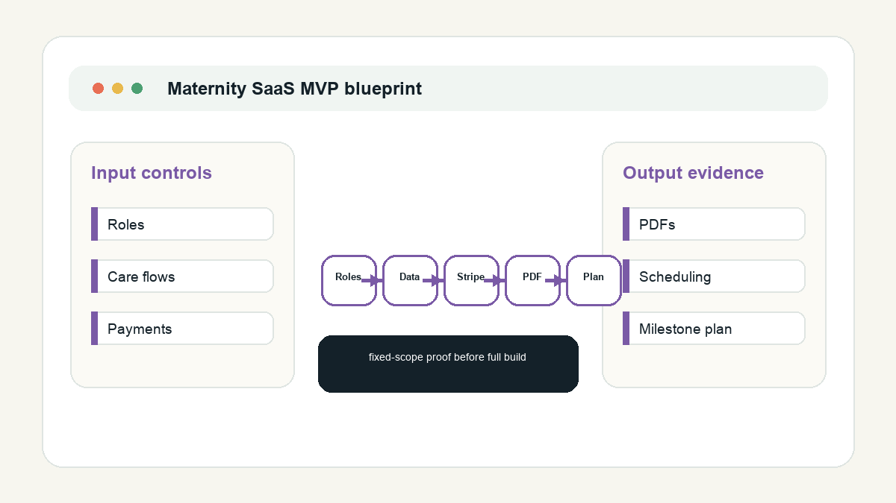

Right first milestone
The blueprint makes the full build quotable and safer.
Bubble SaaS discovery
I can produce the data model, role/privacy map, integration plan, compliance question list, and milestone build quote before the MVP build starts.

The blueprint makes the full build quotable and safer.
Data boundaries are handled before private data or credentials.
The blueprint can inform a milestone-based implementation quote after scope and boundary review.
Send dummy workflows, target user roles, and the must-have MVP screens; no private client or patient data needed.
Prepared by Nakul as an independent freelancer/sole proprietor. This is not medical, legal, privacy, or regulatory advice, and not a promise of compliance certification.